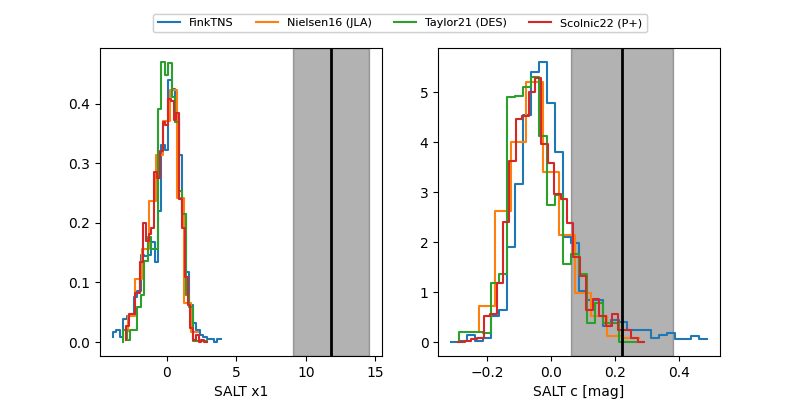

FINK: ZTF25abrpowy
Lasair: ZTF25abrpowy
ALeRCE: ZTF25abrpowy
ZTF25abrpowy (ztf,fink)
equatorial (ra, dec) = (294.7071,-26.64501)
galactic (l, b) = (13.1020,-21.58057)

last atlasc=18.86, atlaso=18.73, ztfr=18.37
4 atlasc, 4 atlaso, 2 ztfr detections